Chapter 4: The 5G Core Network¶
Behind every 5G radio sits the 5G core: the cloud-native software that registers devices, authenticates them, sets up data sessions, enforces quality of service and charges for use. This chapter explains the service-based architecture and each network function, follows registration and PDU session setup message by message, and covers QoS, network slicing, edge computing, voice, 4G interworking, roaming, charging and policy. It ends with the vendors and cloud platforms operators buy from in 2026, and the open-source cores you can run yourself.
4.1 Service-Based Architecture and HTTP/2 SBIs¶
The 5G core is built like a modern web application. Instead of fixed point-to-point links between boxes, each network function offers services through web-style APIs (HTTP/2 with JSON), and any authorised function can call them. Functions register with a directory (the NRF) so others can discover them, much like microservices in a cloud app.
Think of it like…
Older cores were like an office where each department had private phone lines to specific other departments. The 5G core is like an office intranet: every department publishes services in a directory, and anyone with permission can call them.
Real-world example
When fictional Northwind Mobile adds a second SMF instance for a new region, it registers itself with the NRF. The AMF then discovers it with an Nnrf_NFDiscovery query and starts sending Nsmf_PDUSession_CreateSMContext requests, without anyone reconfiguring fixed links.
How it works¶
- Each network function (NF) exposes services named N<nf>_<Service>, such as Namf_Communication or Nudm_SDM.
- On start-up, an NF registers its profile (type, address, services, slices, capacity) with the NRF.
- A consumer NF queries the NRF to discover suitable producers, optionally through an SCP proxy.
- It obtains an OAuth 2.0 access token from the NRF for that service.
- It calls the producer with HTTP/2 requests (POST, GET, PATCH, DELETE) carrying JSON bodies.
- Producers can notify subscribers asynchronously through callback URIs.
Who uses it
Core network engineers, cloud-native developers building NFs, integration and interoperability testers, and security teams reviewing SBI traffic.
Key takeaway
Remember the stack: HTTP/2 over TCP with TLS, JSON payloads, APIs defined in OpenAPI 3.0 YAML in the TS 29.5xx series; OAuth 2.0 for authorisation via NRF.
Going deeper
- Service operations follow REST patterns: resources are created with POST (for example /nsmf-pdusession/v1/sm-contexts), updated with PATCH or POST custom operations, and removed with DELETE.
- 3GPP publishes every SBI as OpenAPI 3.0 YAML in its Forge repository; for example TS 29.502 (Nsmf_PDUSession), TS 29.503 (Nudm), TS 29.510 (Nnrf) and TS 29.518 (Namf).
- Communication models: direct (consumer discovers via NRF then calls producer) or indirect via the Service Communication Proxy (SCP, Release 16), which can perform discovery, routing and load balancing.
- NF profiles in the NRF include NF type, instance ID, PLMN, supported S-NSSAIs and DNNs, capacity, priority and locality, letting consumers select the best instance.
- Point-to-point reference points (N11, N8 and so on) still exist in the specs as a way to describe which NFs interact, but on the wire they are SBI calls.
- Not everything is SBI: N1 (NAS), N2 (NGAP over SCTP), N3/N9 (GTP-U) and N4 (PFCP) remain protocol-specific interfaces.
Common mistakes & misconceptions
- Assuming SBI means 'everything is HTTP': radio-facing, user-plane and UPF control interfaces still use NGAP, GTP-U and PFCP.
- Treating the NRF as optional: without discovery and OAuth tokens most commercial cores will not route requests.
- Leaving SBI traffic unencrypted in production: TLS and OAuth 2.0 are required for security; plaintext h2c is only acceptable in isolated labs.
Try it: Call an NRF discovery API on a lab core (e.g. Open5GS/free5GC in a VM)¶
# HTTP/2 cleartext (h2c) is common in labs; real networks use TLS
curl --http2-prior-knowledge \
"http://127.0.0.10:7777/nnrf-disc/v1/nf-instances?target-nf-type=SMF&requester-nf-type=AMF" | jq '.nfInstances[].nfInstanceId'
Key standards, network functions, technologies & tools¶
| Name | What it does | Example |
|---|---|---|
| Service-Based Architecture (SBA) 3GPP TS 23.501 · Concept · Current · 5G |
The 5G core design where network functions offer and consume services through common APIs rather than fixed links. | Northwind adds a new NF instance that is discovered automatically, with no fixed link configuration. |
| Service-Based Interface (SBI) 3GPP TS 29.500 / 29.501 · Interface · Current · 5G |
The HTTP/2 + JSON API through which an NF exposes its services, named Namf, Nsmf, Nudm and so on. | Packet captures between AMF and SMF show HTTP/2 POST requests with JSON bodies. |
| HTTP/2 IETF RFC 9113 · Protocol · Current · All |
The binary, multiplexed version of HTTP used for all 5G SBI calls, over TCP with TLS. | One TCP connection between AMF and UDM carries hundreds of concurrent HTTP/2 streams. |
| JSON and OpenAPI 3.0 IETF RFC 8259; OpenAPI Initiative · Standard · Current · 5G |
Payload format and API description language used by 3GPP to define every SBI service precisely. | A developer generates client code for Nudm_SDM directly from 3GPP's OpenAPI YAML files. |
| TS 29.500 / 29.501 3GPP · Standard · Current · 5G |
Technical realisation and design principles for SBIs: HTTP/2 usage, headers, error handling and API conventions. | An integration engineer checks TS 29.500 to understand why a 3gpp-Sbi-Target-apiRoot header is needed. |
| NRF (NF Repository Function) 3GPP TS 29.510 · Network function · Current · 5G |
The core's service registry: NFs register profiles, discover each other and obtain OAuth 2.0 tokens. | When a new AUSF instance boots, it sends an NFRegister PUT to the NRF. |
| NF discovery 3GPP TS 29.510 (Nnrf_NFDiscovery) · Procedure · Current · 5G |
A consumer asks the NRF for producers matching criteria such as NF type, slice, DNN or locality. | An AMF asks the NRF for SMFs serving DNN 'internet' in slice SST 1. |
| SCP (Service Communication Proxy) 3GPP Rel-16 (TS 23.501) · Network function · Current · 5G |
Optional proxy routing SBI messages between NFs, handling discovery, load balancing and overload control. | A large operator deploys SCPs so thousands of NF instances do not need full-mesh connections. |
| OAuth 2.0 in the 5G core IETF RFC 6749; 3GPP TS 33.501 · Protocol · Current · 5G |
Authorisation framework where the NRF issues access tokens that producers verify before serving requests. | A UDM rejects a request whose token does not include the nudm-sdm scope. |
| Callback / notification 3GPP TS 29.500 · Procedure · Current · 5G |
Subscribe-notify pattern: a consumer gives a callback URI and the producer POSTs events to it. | The AMF subscribes to UDM changes and receives a notification when the subscriber's plan changes. |
| Service naming (Nnf_Service_Operation) 3GPP TS 23.502 · Concept · Current · 5G |
Convention naming each operation by NF, service and verb, such as Nausf_UEAuthentication_Authenticate. | Reading a call flow, a student recognises Nsmf_PDUSession_CreateSMContext as an SMF service. |
| Reference points vs service interfaces 3GPP TS 23.501 · Concept · Current · 5G |
The architecture can be drawn with numbered reference points (N8, N11) or as services; both describe the same interactions. | A textbook diagram shows N11 between AMF and SMF, which on the wire is Nsmf SBI calls. |
| 3GPP Forge OpenAPI repository 3GPP (forge.3gpp.org) · Resource · Current · 5G |
Public repository of the OpenAPI YAML files for all 5G SBIs, by release. | A student loads TS29502_Nsmf_PDUSession.yaml into Swagger Editor to explore the API. |
| Delegated vs direct communication 3GPP TS 23.501 Annex E · Concept · Current · 5G |
Communication models A-D, ranging from direct calls with static config to fully delegated discovery through an SCP. | A small private core uses model A; a tier-1 operator uses model D with SCPs. |
4.2 The 5G Core Network Functions¶
The 5G core is a set of specialised software functions. The AMF handles device registration and mobility, the SMF manages data sessions, and the UPF forwards the actual data packets. Others handle authentication (AUSF), subscriber data (UDM, UDR), policy (PCF), discovery (NRF), slice selection (NSSF), exposure to outside apps (NEF), analytics (NWDAF), roaming security (SEPP) and charging (CHF).
Think of it like…
Think of an airport: check-in (AMF) registers passengers, security (AUSF) checks identities, the passenger database (UDM/UDR) holds bookings, gate planning (SMF) assigns routes, the baggage belts (UPF) move luggage, and the rules office (PCF) decides priorities.
Real-world example
When Sara's phone powers on, the AMF registers it, the AUSF and UDM authenticate her SIM, the PCF sends her plan's policy, and when she opens a browser the SMF picks a UPF in her region. Her monthly usage is reported by the SMF to the CHF for billing.
How it works¶
- The device's NAS messages arrive at the AMF via the gNB.
- The AMF uses AUSF and UDM to authenticate and fetch subscription data, and the NSSF to choose slices.
- For data, the AMF selects an SMF; the SMF consults UDM and PCF and selects a UPF.
- The SMF programs the UPF over N4 (PFCP); user packets flow gNB → UPF → data network.
- The CHF receives usage for charging; NWDAF collects data for analytics; NEF exposes capabilities to external apps.
- For roaming, SEPPs protect signalling between the visited and home networks.
Who uses it
Core network engineers, solution architects, NOC staff troubleshooting call flows and anyone preparing for a telecom core interview.
Key takeaway
Learn the 4G-to-5G mapping: MME → AMF (+SMF), S/P-GW-C → SMF, S/P-GW-U → UPF, HSS → UDM/UDR/AUSF, PCRF → PCF, OCS/OFCS → CHF, DRA/DEA → SCP/SEPP.
Going deeper
- The AMF terminates N1 NAS signalling and N2 NGAP, handling registration, connection management, reachability, mobility and NAS security; it forwards session messages to the SMF.
- The UDM holds subscription logic and the SIDF that de-conceals SUCI into SUPI; the UDR is the database behind UDM, PCF and NEF, and the UDSF can store unstructured state for stateless NFs.
- NWDAF (Release 15, greatly extended in 16-18) produces analytics such as NF load, slice load, UE mobility, abnormal behaviour and QoS sustainability; Release 17 split it into AnLF and MTLF for ML model training.
- Further NFs include BSF (finds the PCF serving a session), SMSF (SMS over NAS), NSSAAF (slice-specific authentication), LMF (location), N3IWF/TNGF (Wi-Fi access) and UDSF.
- NFs are usually deployed as multiple instances in sets for redundancy; AMF sets share UE context so another AMF can take over without the device re-registering.
- 3GPP TS 23.501 (architecture), TS 23.502 (procedures) and TS 23.503 (policy) are the three core stage-2 specifications every core engineer reads.
Common mistakes & misconceptions
- Thinking the AMF manages sessions like the 4G MME did with bearers: session management moved to the SMF, the AMF only relays SM messages.
- Confusing UDM with UDR: UDM is the front-end application logic; UDR is the data store it (and PCF/NEF) uses.
- Forgetting that NFs are logical: one vendor product may combine several NFs, or one NF may run as dozens of microservices.
Key standards, network functions, technologies & tools¶
| Name | What it does | Example |
|---|---|---|
| AMF (Access and Mobility Management Function) 3GPP TS 23.501 / 29.518 · Network function · Current · 5G |
Handles device registration, connection and mobility management, NAS signalling and security; entry point for all UEs. | Sara's phone registration lands on an AMF that later pages her for an incoming call. |
| SMF (Session Management Function) 3GPP TS 23.501 / 29.502 · Network function · Current · 5G |
Creates and manages PDU sessions, allocates IP addresses, selects and controls UPFs, and applies policy. | The SMF picks a UPF in Manchester and assigns Sara's phone an IPv6 prefix. |
| UPF (User Plane Function) 3GPP TS 23.501 / 29.244 · Network function · Current · 5G |
Forwards user data between gNB and data networks, applying QoS, usage reporting and traffic steering rules. | A UPF processes 200 Gbit/s of subscriber traffic in a regional data centre. |
| AUSF (Authentication Server Function) 3GPP TS 29.509 · Network function · Current · 5G |
Authenticates devices using 5G-AKA or EAP-AKA' with vectors from the UDM. | The AUSF verifies RES* from Sara's SIM and confirms her identity to the AMF. |
| UDM (Unified Data Management) 3GPP TS 29.503 · Network function · Current · 5G |
Manages subscriber data, generates authentication vectors and de-conceals SUCI into SUPI via its SIDF. | The UDM tells the AMF which slices and DNNs Sara's plan allows. |
| UDR (Unified Data Repository) 3GPP TS 29.504 / 29.505 · Network function · Current · 5G |
The central database storing subscription, policy, application and exposure data for UDM, PCF and NEF. | A geo-redundant UDR cluster stores 30 million subscriber profiles. |
| PCF (Policy Control Function) 3GPP TS 29.507 / 29.512 / 29.525 · Network function · Current · 5G |
Decides policy: QoS, charging rules, access and mobility policy, and UE route selection policies. | The PCF gives Sara's unlimited plan a 5 Mbit/s throttle after 200 GB. |
| NSSF (Network Slice Selection Function) 3GPP TS 29.531 · Network function · Current · 5G |
Chooses which network slices and AMF set serve a device based on its request and subscription. | The NSSF allows a fleet tracker only the mMTC slice SST 3. |
| NEF (Network Exposure Function) 3GPP TS 29.522 · Network function · Current · 5G |
Securely exposes network capabilities and events to external applications via APIs. | A logistics app uses the NEF to be notified when a truck's modem becomes reachable. |
| NWDAF (Network Data Analytics Function) 3GPP TS 23.288 / 29.520 · Network function · Current · 5G |
Collects data from NFs and OAM and provides analytics and predictions to other functions. | NWDAF predicts slice load so the PCF can steer new sessions to a quieter slice. |
| SEPP (Security Edge Protection Proxy) 3GPP TS 29.573 / 33.501 · Network function · Current · 5G |
Border proxy protecting SBI signalling exchanged with other operators over N32 for roaming. | All signalling from a roaming partner passes through the home SEPP before reaching the UDM. |
| CHF (Charging Function) 3GPP TS 32.290 / 32.291 · Network function · Current · 5G |
Converged online and offline charging: grants quotas, records usage and produces charging data records. | The CHF grants Sara's prepaid session 500 MB at a time. |
| BSF (Binding Support Function) 3GPP TS 29.521 · Network function · Current · 5G |
Tracks which PCF instance serves each PDU session so applications reach the right one. | The IMS P-CSCF asks the BSF which PCF handles a VoNR caller's session. |
| SMSF (SMS Function) 3GPP TS 29.540 · Network function · Current · 5G |
Supports SMS over NAS for 5G devices, linking to the SMS centre. | A 5G SA-only IoT module receives configuration SMS via the SMSF. |
| UDSF (Unstructured Data Storage Function) 3GPP TS 29.598 · Network function · Current · 5G |
Optional store for NF state data, letting NF instances become stateless and replaceable. | A crashed AMF pod's UE contexts are recovered from the UDSF by another pod. |
| N3IWF / TNGF 3GPP TS 23.501 · Network function · Current · 5G |
Gateways connecting untrusted (N3IWF) or trusted (TNGF) non-3GPP access such as Wi-Fi to the 5G core. | A phone uses Wi-Fi calling through an N3IWF IPsec tunnel into the 5G core. |
4.3 Control/User Plane Separation, the UPF and Core Protocols¶
The 5G core strictly separates the brain from the muscle. Control-plane functions (AMF, SMF) make decisions; the UPF just forwards packets according to rules the SMF installs. Because they are separate, operators can place UPFs close to users or at the edge while keeping control functions centralised, and scale each independently.
Think of it like…
It is like air traffic control and runways: controllers in a central tower (SMF) give instructions, and runways (UPFs) in many airports handle the actual planes. You can build more runways without hiring more controllers.
Real-world example
Northwind's SMFs run in two central data centres, but it deploys 12 UPFs in regional sites and a small UPF at a car factory. When a factory robot opens a session, the SMF selects the factory UPF over N4, so control traffic travels far but robot data never leaves the site.
How it works¶
- The SMF establishes a PFCP association with each UPF over N4 (UDP port 8805).
- For each PDU session, the SMF sends a PFCP Session Establishment Request with packet rules.
- The UPF matches packets using PDRs (detection rules), then applies FARs (forward), QERs (QoS), URRs (usage) and BARs (buffering).
- Uplink packets arrive from the gNB on N3 inside GTP-U tunnels (UDP 2152) and leave decapsulated on N6.
- Downlink packets are matched, marked with the QoS flow ID and tunnelled back to the right gNB.
- The UPF reports usage and events back to the SMF, which handles charging and policy.
Who uses it
Packet core engineers, edge-computing architects, network performance engineers and developers of high-performance packet processing (DPDK, eBPF, SmartNIC).
Key takeaway
Memorise ports and protocols: NGAP over SCTP 38412 (N2), GTP-U over UDP 2152 (N3/N9), PFCP over UDP 8805 (N4), NAS inside NGAP (N1).
Going deeper
- PFCP (TS 29.244) was introduced with 4G CUPS in Release 14 (Sx interfaces) and reused for N4; the same UPF software often serves as a combined PGW-U/UPF.
- Packet Detection Rules can match on UE IP, TEID, application ID, 5-tuple filters and QFI; each PDR points to FAR, QER and URR IDs, so one session may contain dozens of rules.
- GTP-U carries a PDU Session Container extension header with the QFI and reflective QoS indicator, linking each packet to its QoS flow.
- UPF chaining over N9 enables an intermediate UPF (I-UPF), an uplink classifier (UL CL) or a branching point for edge breakout, and home-routed roaming between visited and home UPFs.
- High-performance UPFs use DPDK, VPP (FD.io), SmartNICs/DPUs or eBPF/XDP in Linux to reach hundreds of Gbit/s per server; throughput per watt is a key purchasing metric.
- NGAP runs over SCTP for multi-homing and message boundaries; NAS-5GS messages ride inside NGAP's DownlinkNASTransport and UplinkNASTransport messages.
Common mistakes & misconceptions
- Thinking the SMF is in the data path: user packets never pass through it; if it fails, existing flows usually keep forwarding.
- Forgetting GTP-U overhead: encapsulation adds about 36-40 bytes per packet over IPv4 (more with IPv6 and extension headers), which affects MTU settings.
- Exposing N4 or N3 to untrusted networks: PFCP and GTP-U have little built-in security and must be protected with IPsec or isolated transport.
Try it: Filter 5G core protocols in a Wireshark/tshark capture¶
# capture file from your own lab core (e.g. Open5GS + UERANSIM)
tshark -r lab5g.pcapng -Y "ngap || pfcp || gtp || nas-5gs" \
-T fields -e frame.number -e _ws.col.Protocol -e _ws.col.Info | head -40
Key standards, network functions, technologies & tools¶
| Name | What it does | Example |
|---|---|---|
| CUPS (Control and User Plane Separation) 3GPP TS 23.214 (Rel-14), TS 23.501 · Concept · Current · All |
Splitting gateway control and packet forwarding into separate functions, first for 4G then fundamental in 5G. | Northwind keeps SMFs central and places UPFs in 12 regions for shorter data paths. |
| PFCP 3GPP TS 29.244 · Protocol · Current · All |
Packet Forwarding Control Protocol: the SMF's language for installing and modifying rules in UPFs over N4. | A PFCP Session Modification Request adds a QER throttling a user to 5 Mbit/s. |
| GTP-U 3GPP TS 29.281 · Protocol · Current · All |
GPRS Tunnelling Protocol for user data: wraps user packets in UDP/IP tunnels identified by TEIDs. | Uplink traffic from a gNB to the UPF travels in GTP-U on UDP port 2152. |
| NGAP 3GPP TS 38.413 · Protocol · Current · 5G |
NG Application Protocol between gNB and AMF over SCTP: UE context, PDU session resources, paging, handover. | A PDUSessionResourceSetupRequest tells the gNB to create a radio bearer for a new session. |
| NAS-5GS (5GMM and 5GSM) 3GPP TS 24.501 · Protocol · Current · 5G |
Device-to-core signalling: 5GMM for registration and mobility with the AMF, 5GSM for sessions with the SMF. | A Wireshark trace shows a Registration Request followed by an Authentication Request. |
| PDR, FAR, QER, URR, BAR 3GPP TS 29.244 · Concept · Current · All |
PFCP rule types: detect packets, forward them, enforce QoS, report usage and control buffering. | One PDU session in a UPF log has four PDRs, two FARs and one URR. |
| N3 interface 3GPP TS 23.501 · Interface · Current · 5G |
User-plane GTP-U interface between the gNB and the UPF. | A transport team sizes N3 links at 2 x 25 Gbit/s per regional UPF site. |
| N4 interface 3GPP TS 23.501 · Interface · Current · 5G |
Control interface between SMF and UPF carrying PFCP. | An outage on N4 stops new sessions but existing traffic keeps flowing. |
| N6 interface 3GPP TS 23.501 · Interface · Current · 5G |
Interface between the UPF and a data network such as the internet, an IMS network or an enterprise LAN. | A UPF's N6 connects through a NAT and firewall to the internet. |
| N9 interface 3GPP TS 23.501 · Interface · Current · 5G |
UPF-to-UPF user-plane interface used for chaining, edge breakout and home-routed roaming. | A visited UPF sends a roamer's traffic over N9 to the home UPF. |
| TEID (Tunnel Endpoint Identifier) 3GPP TS 29.281 · Concept · Current · All |
A 32-bit label in each GTP-U header identifying the tunnel and therefore the session it belongs to. | The gNB uses TEID 0x1A2B for Sara's session when sending to the UPF. |
| DPDK and VPP Linux Foundation (DPDK, FD.io VPP) · Software · Current · All |
User-space fast-packet-processing frameworks used by many UPFs to bypass the kernel network stack. | A VPP-based UPF forwards 100 Gbit/s on a single dual-socket server. |
| eBPF/XDP UPF Linux kernel; open-source projects · Technology · Emerging · 5G |
Implementing UPF packet processing in the Linux kernel's eBPF/XDP fast path. | A university lab tests an eBPF-based UPF with Open5GS as the control plane. |
| SmartNIC / DPU offload NVIDIA, Intel, AMD and others · Equipment · Current · 5G |
Network cards with on-board processors that offload UPF forwarding, saving server CPU and power. | An operator offloads GTP-U encapsulation to DPUs, cutting UPF server count by a third. |
| SCTP IETF RFC 9260 · Protocol · Current · All |
Stream Control Transmission Protocol used under NGAP, offering multi-homing and multiple streams. | Each gNB opens an SCTP association to port 38412 on the AMF. |
4.4 The Cloud-Native Core: CNFs, Kubernetes and Service Mesh¶
Modern 5G cores are not hardware boxes; they are software built from many small containerised services (microservices) running on Kubernetes, the same platform used by big web companies. These cloud-native network functions (CNFs) can scale out, heal automatically and be upgraded without downtime.
Think of it like…
An old core was like a single giant machine in a factory: if it broke, the line stopped. A cloud-native core is like a fleet of small identical machines managed by a supervisor (Kubernetes) who replaces broken ones and adds more on busy days.
Real-world example
On New Year's Eve, Northwind's AMF CNF sees registration requests triple. Kubernetes' Horizontal Pod Autoscaler adds AMF pods within minutes, and a canary upgrade of the SMF is paused until traffic calms down. No subscriber notices either change.
How it works¶
- Each NF is decomposed into microservices (for example SBI front end, business logic, state store, load balancer).
- Microservices are packaged as container images and deployed with Helm charts or operators.
- Kubernetes schedules pods across servers, restarts failed ones and scales them with load.
- Multus and SR-IOV give pods extra high-speed interfaces for N3/N6 traffic; DPDK accelerates the UPF.
- A service mesh or the NF's own proxy handles mutual TLS, retries and traffic shaping between microservices.
- CI/CD pipelines and GitOps tools roll out upgrades gradually, with automated testing and rollback.
Who uses it
Telco cloud engineers, DevOps/SRE teams at operators, platform architects and vendor developers building CNFs.
Key takeaway
Interviewers ask: VNF vs CNF (VMs vs containers), why the UPF needs SR-IOV/DPDK, how state is handled (external databases or UDSF), and what Nephio and Sylva are.
Going deeper
- ETSI NFV (from 2012) first virtualised network functions as VMs (VNFs) managed by MANO; cloud-native CNFs on Kubernetes became the norm for 5G core from around 2020.
- Telco workloads stress Kubernetes: they need multiple network interfaces (Multus), line-rate packet I/O (SR-IOV, DPDK), CPU pinning and huge pages, NUMA awareness and precise time for some functions.
- State is kept outside pods in in-memory databases or a UDSF so any pod can serve any subscriber; AMF and SMF sets use this to survive pod failures without re-registration.
- Linux Foundation projects shaping telco cloud include Nephio (Kubernetes-based intent automation, started 2022 with Google) and Sylva (European telco cloud stack, launched 2022).
- Common platforms include Red Hat OpenShift, Wind River Studio, VMware Telco Cloud Platform (now under Broadcom), vendor CaaS layers from Ericsson and Nokia, and public-cloud Kubernetes (EKS, AKS, GKE).
- Observability uses Prometheus metrics, OpenTelemetry tracing and log pipelines; operators correlate them with 3GPP performance counters defined in TS 28.552.
Common mistakes & misconceptions
- Equating 'running in containers' with cloud-native: lifted-and-shifted monoliths in a container lack autoscaling, statelessness and independent upgrades.
- Assuming any Kubernetes cluster can run a UPF at line rate: it needs SR-IOV, DPDK or SmartNICs, CPU isolation and tuned kernels.
- Underestimating multi-vendor integration: a CNF certified on one CaaS may need significant work on another platform.
Try it: Inspect a lab 5G core running on Kubernetes¶
kubectl get pods -n open5gs -o wide
kubectl top pods -n open5gs # needs metrics-server
kubectl logs deploy/open5gs-amf -n open5gs | grep -i registration | tail
Key standards, network functions, technologies & tools¶
| Name | What it does | Example |
|---|---|---|
| CNF (Cloud-native Network Function) CNCF / industry · Concept · Current · 5G |
A network function built as containerised microservices designed for orchestration, scaling and resilience on Kubernetes. | Northwind's SMF CNF scales from 6 to 18 pods during peak hours. |
| VNF (Virtual Network Function) ETSI NFV · Concept · Legacy · 4G |
A network function packaged as a virtual machine, the earlier NFV approach before containers. | Northwind's 2017 virtual EPC ran as VNFs on OpenStack. |
| Kubernetes CNCF (originally Google) · Software · Current · All |
Open-source container orchestration platform that deploys, scales and heals containerised applications. | All Northwind core CNFs run on three Kubernetes clusters per data centre. |
| Helm CNCF · Software · Current · All |
Package manager for Kubernetes; vendors ship CNFs as Helm charts with configurable values. | An engineer installs a lab core with 'helm install core5g ./open5gs-chart'. |
| Kubernetes operator CNCF pattern · Concept · Current · All |
A controller that encodes operational knowledge to automate installing, upgrading and healing an application. | A UDR operator automatically rebalances database replicas after a node failure. |
| Multus CNI Kubernetes Network Plumbing WG · Software · Current · All |
A plugin letting pods attach to multiple networks, needed to separate SBI, N3, N4 and N6 traffic. | A UPF pod gets separate interfaces for N3 and N6 through Multus. |
| SR-IOV PCI-SIG · Technology · Current · All |
Hardware feature that splits a physical NIC into virtual functions assigned directly to pods for near-line-rate I/O. | Each UPF pod receives two SR-IOV virtual functions on a 100 Gbit/s NIC. |
| Service mesh (Istio, Linkerd) CNCF / open source · Software · Current · All |
Infrastructure layer providing mutual TLS, retries, routing and telemetry between microservices. | Istio sidecars enforce mTLS between the SMF's internal microservices. |
| Red Hat OpenShift Red Hat (IBM) · Software · Current · All |
Enterprise Kubernetes platform widely used as the CaaS layer for telco CNFs. | A European operator runs Nokia and Ericsson core CNFs on OpenShift clusters. |
| Nephio Linux Foundation · Software · Emerging · 5G |
Open-source project using Kubernetes for intent-based automation of network functions and their cloud infrastructure. | A lab uses Nephio to deploy free5GC packages across edge clusters declaratively. |
| Sylva Linux Foundation Europe · Software · Emerging · 5G |
European telco-cloud stack project defining a common Kubernetes-based platform for network functions. | European operators test vendors' CNFs against the Sylva reference stack. |
| ETSI NFV MANO ETSI ISG NFV · Standard · Current · All |
Management and orchestration framework (NFVO, VNFM, VIM) for virtualised network functions. | A legacy orchestrator onboards VNFs using ETSI NFV descriptors. |
| GitOps (Argo CD, Flux) CNCF projects · Tool · Current · All |
Managing deployments by declaring desired state in Git, with tools that reconcile clusters to it. | A core config change is merged in Git and Argo CD rolls it out to staging first. |
| Horizontal Pod Autoscaler Kubernetes · Software · Current · All |
Kubernetes feature that adds or removes pod replicas based on CPU, memory or custom metrics. | AMF pods scale on registrations-per-second during a stadium event. |
| Prometheus and OpenTelemetry CNCF · Tool · Current · All |
Metrics collection and distributed tracing tools used to observe CNFs. | A dashboard shows SBI latency from SMF to PCF via Prometheus metrics. |
4.5 Registration and Authentication, Step by Step¶
Before a phone can use 5G, it must register with the core. It sends a concealed identity, the core finds the subscriber, both sides prove they know the secret key on the SIM, security is switched on, and the core returns a temporary ID, allowed slices and an area where the phone can roam without re-registering.

Think of it like…
It is like checking into a secure building: you show a sealed envelope with your ID (SUCI), reception asks head office to open it, you answer a challenge only the real you could answer, then you get a visitor badge (5G-GUTI) valid for certain floors (allowed slices).
Real-world example
Sara switches on her new phone abroad. Her phone sends a Registration Request with a SUCI, the visited AMF contacts her home network's AUSF via SEPPs, 5G-AKA succeeds, and within a second or two she receives a 5G-GUTI and allowed NSSAI. A log viewer shows about a dozen messages for the whole exchange.
How it works¶
- UE → AMF: Registration Request (SUCI or 5G-GUTI, requested NSSAI, capabilities) inside RRC and NGAP.
- AMF → AUSF: Nausf_UEAuthentication_Authenticate; AUSF → UDM: Nudm_UEAuthentication_Get (SIDF reveals SUPI, vector generated).
- AMF → UE: Authentication Request (RAND, AUTN); UE's SIM checks AUTN and returns RES*; AUSF confirms.
- AMF → UE: NAS Security Mode Command; UE replies Security Mode Complete, so NAS is now ciphered and integrity protected.
- AMF registers with UDM (Nudm_UECM), fetches subscription (Nudm_SDM) and gets access/mobility policy from the PCF.
- AMF → UE: Registration Accept (5G-GUTI, allowed NSSAI, TAI list); UE → AMF: Registration Complete.
Who uses it
Core engineers troubleshooting attach failures, protocol testers, device acceptance teams and security engineers analysing authentication flows.
Key takeaway
Know the identifiers: SUPI (permanent, usually IMSI-based), SUCI (encrypted SUPI), 5G-GUTI (temporary, from the AMF), PEI (device ID, IMEI); details of the cryptography are in the security chapter.
Going deeper
- Registration types: initial, mobility registration update (new tracking area), periodic registration update (default timer T3512 of 54 minutes) and emergency registration.
- If the UE sends a valid 5G-GUTI, the AMF may fetch its context from the old AMF (Namf_Communication_UEContextTransfer) and skip full authentication.
- The AMF selects slices with the NSSF if needed and may reroute the registration to a different AMF set that supports the requested slices.
- Successful authentication yields an anchor key (KSEAF) from which the AMF derives KAMF and then NAS and AS keys; the security chapter covers 5G-AKA and EAP-AKA' internals.
- A tracking area list (TAI list) defines where the UE can move without a mobility update; tracking area codes are 24 bits in 5G (16 in LTE).
- Typical failure causes in logs include 5GMM cause #3 (illegal UE), #7 (5GS services not allowed), #15 (no suitable cells in tracking area) and #62 (no network slices available).
Common mistakes & misconceptions
- Assuming the IMSI travels in clear text as in older generations: 5G sends SUCI, the SUPI encrypted with the home network's public key (unless the null scheme is configured).
- Confusing registration with PDU session setup: registration gives no IP address; a separate PDU session is needed for data.
- Blaming the radio for every registration failure: many failures come from subscription data, slice configuration or roaming agreements in the core.
Key standards, network functions, technologies & tools¶
| Name | What it does | Example |
|---|---|---|
| Registration procedure 3GPP TS 23.502 §4.2.2.2 · Procedure · Current · 5G |
How a UE becomes known to the 5G core: identity, authentication, security, subscription and allowed slices. | Sara's phone completes initial registration in under two seconds after boot. |
| SUPI 3GPP TS 23.003 / 23.501 · Concept · Current · 5G |
Subscription Permanent Identifier, usually IMSI-based (imsi-...) or a network access identifier (nai-...). | Sara's SUPI is imsi-234150123456789, never sent in clear over the air. |
| SUCI 3GPP TS 33.501 · Concept · Current · 5G |
Subscription Concealed Identifier: the SUPI encrypted with the home network's public key for privacy. | An IMSI catcher sees only a SUCI that changes each time, not Sara's IMSI. |
| 5G-GUTI 3GPP TS 23.003 · Concept · Current · 5G |
Temporary identity assigned by the AMF, used in later registrations and paging instead of the SUPI. | The AMF gives Sara's phone a new 5G-GUTI after each mobility registration. |
| PEI (Permanent Equipment Identifier) 3GPP TS 23.003 · Concept · Current · All |
The device's hardware identity, usually the IMEI or IMEISV, checked against equipment registers. | The AMF checks the PEI against a list of stolen phones via the 5G-EIR. |
| 5G-AKA 3GPP TS 33.501 · Protocol · Current · 5G |
5G's main authentication protocol using the SIM's secret key, with home-network confirmation of the result. | Sara's SIM computes RES* from RAND and its key K; the home AUSF verifies it. |
| EAP-AKA' IETF RFC 9048; 3GPP TS 33.501 · Protocol · Current · 5G |
EAP-based alternative authentication method mandated in 5G, also usable for non-3GPP access. | A private network operator chooses EAP-AKA' for consistency with its Wi-Fi authentication. |
| SIDF 3GPP TS 33.501 · Network function · Current · 5G |
Subscription Identifier De-concealing Function inside the UDM that decrypts SUCI back into SUPI. | Only the home network's SIDF holds the private key to reveal Sara's identity. |
| NAS Security Mode Command 3GPP TS 24.501 · Procedure · Current · 5G |
AMF message selecting algorithms and activating NAS ciphering and integrity protection. | After Security Mode Complete, all NAS messages are encrypted with NEA2 (AES-based). |
| Nudm_UECM and Nudm_SDM 3GPP TS 29.503 · Interface · Current · 5G |
UDM services: context management (which AMF serves the UE) and subscriber data retrieval and change notification. | The AMF registers itself via Nudm_UECM and subscribes to Sara's data changes via Nudm_SDM. |
| Allowed NSSAI 3GPP TS 23.501 · Concept · Current · 5G |
The list of network slices the device may use in the current area, returned in Registration Accept. | Sara's allowed NSSAI contains SST 1; her company tablet also gets an enterprise slice. |
| Tracking area and TAI list 3GPP TS 23.501 · Concept · Current · All |
Groups of cells for paging and mobility; a TAI list tells the UE where it may move without re-registering. | Commuting inside her TAI list, Sara's phone sends no mobility updates. |
| Periodic registration (T3512) 3GPP TS 24.501 · Procedure · Current · 5G |
A timer-based registration so the network knows a device is still alive; default 54 minutes. | An IoT module negotiates a longer T3512 to save battery. |
| 5GMM cause codes 3GPP TS 24.501 · Concept · Current · 5G |
Numeric reasons for registration rejections, essential when troubleshooting failures. | A log showing cause #62 tells the engineer the requested slices are unavailable. |
| Deregistration 3GPP TS 23.502 · Procedure · Current · 5G |
UE- or network-initiated removal of registration, for example on power-off or subscription withdrawal. | When Sara switches to flight mode, her phone sends a Deregistration Request. |
4.6 PDU Session Establishment, Step by Step¶
A PDU session is the 5G data connection between a device and a data network such as the internet. The device asks for one, naming the data network (DNN) and slice; the SMF checks the subscription and policy, picks a UPF, gives the device an IP address, and tells the base station to set up a radio bearer. Only then can packets flow.

Think of it like…
Registering is getting your library card; a PDU session is booking a specific study room. You say which room type you want (DNN and slice), the desk checks your card allows it, assigns a room (UPF and IP address) and gives you the key.
Real-world example
When Sara opens her browser, her phone sends a PDU Session Establishment Request for DNN 'internet' in slice SST 1. The SMF gets her subscription from the UDM and policy from the PCF, chooses a UPF in her region, allocates an IPv6 prefix and returns a session accept. Her first web page loads about 200 ms later.
How it works¶
- UE → AMF: NAS PDU Session Establishment Request (PDU session ID, DNN, S-NSSAI, session type).
- AMF selects an SMF (via NRF) and calls Nsmf_PDUSession_CreateSMContext.
- SMF retrieves session subscription (Nudm_SDM) and SM policy (Npcf_SMPolicyControl_Create).
- SMF selects a UPF, allocates the IP address and sends a PFCP Session Establishment Request over N4.
- SMF → AMF → gNB: N2 PDU Session Resource Setup with QoS profiles and the NAS accept; gNB configures DRBs with the UE.
- gNB returns its N3 tunnel address; SMF updates the UPF (PFCP modification) so downlink data can flow.
Who uses it
Packet core engineers, troubleshooting teams in network operations centres, device testers and enterprise private-network integrators.
Key takeaway
One UE can have up to 15 PDU sessions; session types are IPv4, IPv6, IPv4v6, Ethernet and Unstructured; SSC modes 1-3 control whether the IP anchor can change.
Going deeper
- SSC mode 1 keeps the same UPF anchor and IP for the session's life; mode 2 releases and re-establishes it when moving; mode 3 makes a new session before breaking the old (make-before-break).
- Ethernet PDU sessions carry Layer-2 frames, supporting industrial LANs and Time-Sensitive Networking integration, while Unstructured sessions carry non-IP payloads for IoT.
- IP allocation can be done by the SMF, the UPF, a DHCP server or a RADIUS/DIAMETER AAA in the data network; IPv6 uses a /64 prefix announced by Router Advertisement.
- If the UE goes CM-IDLE, the N3 tunnel is released but the session stays; downlink data at the UPF triggers buffering and paging via the SMF and AMF (network-triggered service request).
- The PDU session ID (1-15) and the default QoS rule are created first; further QoS flows can be added later with PDU Session Modification.
- A PDU session is the 5G successor to the 4G PDN connection; DNN replaces APN, but the concept of a named data network remains.
Common mistakes & misconceptions
- Thinking a PDU session equals a radio bearer: one session can map to several QoS flows and DRBs, and it persists when radio resources are released.
- Forgetting that the DNN must be in the subscription: a typo or missing DNN in UDM data is a classic cause of 'cannot connect to data'.
- Assuming SSC mode 3 works everywhere: it needs network and device support and applications that tolerate IP address changes.
Key standards, network functions, technologies & tools¶
| Name | What it does | Example |
|---|---|---|
| PDU session 3GPP TS 23.501 · Concept · Current · 5G |
A logical connection between a UE and a data network, providing IP, Ethernet or unstructured data delivery. | Sara's phone holds one PDU session for internet and one for IMS voice. |
| DNN (Data Network Name) 3GPP TS 23.003 · Concept · Current · 5G |
The name of the data network a session connects to, the 5G equivalent of the APN. | Phones use DNN 'internet' for browsing and 'ims' for voice. |
| PDU session types 3GPP TS 23.501 · Concept · Current · 5G |
IPv4, IPv6, IPv4v6, Ethernet and Unstructured, chosen per session. | A factory's PLC uses an Ethernet PDU session to reach an industrial LAN. |
| SSC modes 1, 2, 3 3GPP TS 23.501 · Concept · Current · 5G |
Session and service continuity modes controlling whether the UPF anchor and IP address can change as users move. | A mobile edge game uses SSC mode 3 to move to a closer UPF without dropping. |
| Nsmf_PDUSession 3GPP TS 29.502 · Interface · Current · 5G |
SMF service used by the AMF to create, update and release session contexts. | An integration test calls CreateSMContext with a mocked AMF to validate a new SMF. |
| Npcf_SMPolicyControl 3GPP TS 29.512 · Interface · Current · 5G |
PCF service providing session policy and charging rules to the SMF over N7. | The PCF returns a rule capping a prepaid session at 10 Mbit/s. |
| UPF selection 3GPP TS 23.501 §6.3.3 · Procedure · Current · 5G |
SMF logic choosing a UPF by DNN, slice, location, load and capabilities. | A user in Glasgow is served by the Scottish UPF instead of the London one. |
| PFCP Session Establishment 3GPP TS 29.244 · Procedure · Current · 5G |
N4 message creating a session context in the UPF with its PDRs, FARs, QERs and URRs. | The UPF allocates an uplink TEID and returns it in the PFCP response. |
| N1N2MessageTransfer 3GPP TS 29.518 (Namf_Communication) · Procedure · Current · 5G |
AMF service the SMF uses to send NAS messages to the UE and NGAP info to the gNB. | The SMF packs the NAS accept and QoS profile into one N1N2MessageTransfer call. |
| PDU Session Resource Setup 3GPP TS 38.413 · Procedure · Current · 5G |
NGAP procedure asking the gNB to set up radio resources and an N3 tunnel for a session. | The gNB maps the default QoS flow to DRB 1 and responds with its tunnel address. |
| Service request 3GPP TS 23.502 §4.2.3 · Procedure · Current · 5G |
Procedure that re-establishes radio and N3 resources for existing sessions when an idle UE has data. | Sara's idle phone sends a Service Request when a chat message needs sending. |
| Network-triggered paging for data 3GPP TS 23.502 · Procedure · Current · 5G |
UPF buffers downlink data for an idle UE and notifies the SMF, which asks the AMF to page. | A push notification arrives for an idle phone; the UPF buffers it while the AMF pages. |
| PDU session release 3GPP TS 23.502 · Procedure · Current · 5G |
Tearing down a session, initiated by UE, SMF or policy, freeing UPF and radio resources. | When Sara disables mobile data, her phone releases its internet PDU session. |
| IP address allocation 3GPP TS 23.501 §5.8 · Procedure · Current · All |
Assigning UE IPv4 addresses or IPv6 prefixes via SMF pools, UPF, DHCP or external AAA. | An enterprise DNN gets addresses from the customer's own RADIUS server. |
| Ethernet PDU session 3GPP Rel-15/16 · Technology · Current · 5G |
Carries Ethernet frames end-to-end, enabling 5G LAN and industrial use cases. | A port's cranes join the terminal's Ethernet network over 5G Ethernet sessions. |
4.7 The 5G QoS Model: QoS Flows, 5QI, GBR and Non-GBR¶
Different traffic needs different treatment: a voice call needs low delay, a video download needs throughput, a robot command needs reliability. 5G groups packets into QoS flows, each labelled with a 5QI number describing its priority, delay budget and error rate. Some flows get guaranteed bit rates (GBR); others share what is left (non-GBR).
Think of it like…
It is like an airport security queue with lanes: a fast-track lane with guaranteed throughput for crew (GBR), a priority lane for families, and the general lane where everyone shares the remaining officers (non-GBR).
Real-world example
During a VoNR call, Sara's voice packets travel in a QoS flow with 5QI 1 (GBR, 100 ms delay budget) while her music streaming uses the default 5QI 9 flow. When the cell gets busy, the gNB schedules voice first, so her call stays clear while the stream briefly buffers.
How it works¶
- The PCF decides policy and sends PCC rules with QoS parameters to the SMF.
- The SMF creates QoS flows, each identified by a QFI, and installs rules in the UPF and the UE.
- UPF classifies downlink packets with packet filters and marks them with the QFI in GTP-U.
- The UE classifies uplink packets with QoS rules (or reflective QoS) and marks the QFI.
- In the gNB, SDAP maps QoS flows onto data radio bearers with suitable RLC/PDCP settings.
- The gNB scheduler honours 5QI priority, delay budget and bit rates (GFBR, MFBR, AMBRs).
Who uses it
Core and RAN engineers, policy designers, VoNR and enterprise service architects, and anyone configuring private 5G for industrial applications.
Key takeaway
Memorise a few 5QIs: 1 = conversational voice (GBR, 100 ms), 2 = video call, 5 = IMS signalling (non-GBR, top priority), 9 = default internet, 82-85 = delay-critical GBR for industrial use.
Going deeper
- Standardised 5QIs are listed in TS 23.501 Table 5.7.4-1 with resource type, default priority level, packet delay budget (PDB), packet error rate (PER), averaging window and, for delay-critical GBR, maximum data burst volume.
- Three resource types exist: GBR, non-GBR and delay-critical GBR (Release 15+) whose PDB includes the core network and which define a maximum data burst volume, such as 255 bytes for 5QI 82.
- The QFI is 6 bits, so up to 64 QoS flows per PDU session; every session has a default QoS rule, usually 5QI 9, plus optional dedicated flows.
- Aggregate limits: Session-AMBR caps all non-GBR flows in one session; UE-AMBR caps all non-GBR traffic of the UE; GBR flows carry GFBR (guaranteed) and MFBR (maximum) rates.
- Reflective QoS lets the UPF signal (RQI bit) that the UE should derive uplink QoS rules by mirroring downlink packets, saving signalling for many short flows.
- ARP (allocation and retention priority, 1-15) decides which flows get admitted or pre-empted when resources are short, separately from scheduling priority.
Common mistakes & misconceptions
- Assuming 5QI equals scheduling priority alone: it bundles priority, delay budget and error rate, and the gNB scheduler interprets it in vendor-specific ways.
- Creating many GBR flows without admission control: GBR reserves capacity and can starve everyone else in a busy cell.
- Mapping 5G QoS one-to-one onto LTE bearers: in 5G several QoS flows can share one DRB, while LTE had one bearer per QCI.
Key standards, network functions, technologies & tools¶
| Name | What it does | Example |
|---|---|---|
| QoS flow 3GPP TS 23.501 §5.7 · Concept · Current · 5G |
The finest QoS granularity in a PDU session: packets sharing one treatment, identified by a QFI. | Sara's session has a default flow and a dedicated voice flow during calls. |
| QFI (QoS Flow Identifier) 3GPP TS 23.501 · Concept · Current · 5G |
A 6-bit label carried in GTP-U and SDAP headers identifying a packet's QoS flow. | Voice packets carry QFI 1 while web traffic carries QFI 9 in the operator's setup. |
| 5QI (5G QoS Identifier) 3GPP TS 23.501 Table 5.7.4-1 · Concept · Current · 5G |
A number referencing standard QoS characteristics: resource type, priority, delay budget and error rate. | A gaming add-on maps traffic to 5QI 3 with a 50 ms delay budget. |
| GBR 3GPP TS 23.501 · Concept · Current · All |
Guaranteed Bit Rate flows reserve capacity for their guaranteed rate (GFBR), up to a maximum (MFBR). | A broadcast camera uplink gets a 20 Mbit/s GBR flow during a live event. |
| Non-GBR 3GPP TS 23.501 · Concept · Current · All |
Flows with no reserved rate, sharing remaining capacity according to priority, capped by AMBRs. | Normal web browsing and app downloads run on non-GBR 5QI 9. |
| Delay-critical GBR 3GPP TS 23.501 (5QI 82-90) · Concept · Current · 5G |
GBR type for URLLC traffic with tight end-to-end delay budgets and maximum burst sizes. | Motion-control traffic in a factory uses 5QI 82 with a 10 ms budget. |
| 5QI 1 (conversational voice) 3GPP TS 23.501 · Concept · Current · 5G |
GBR flow for voice: 100 ms delay budget, 10^-2 packet error rate, priority 20. | Every VoNR call gets a 5QI 1 flow for its RTP media. |
| 5QI 5 (IMS signalling) 3GPP TS 23.501 · Concept · Current · 5G |
Non-GBR flow with the highest default priority (10), 100 ms budget and 10^-6 error rate. | SIP INVITE messages for a VoNR call travel on the 5QI 5 flow of the IMS session. |
| 5QI 9 (default) 3GPP TS 23.501 · Concept · Current · 5G |
The typical default non-GBR flow for internet traffic: 300 ms budget, 10^-6 error rate. | Most of a smartphone's traffic, from social media to email, travels in 5QI 9. |
| ARP (Allocation and Retention Priority) 3GPP TS 23.501 · Concept · Current · All |
Priority level 1-15 plus pre-emption flags deciding admission and pre-emption under congestion. | A first-responder session with ARP 1 can pre-empt a consumer video flow. |
| Session-AMBR and UE-AMBR 3GPP TS 23.501 · Concept · Current · 5G |
Aggregate maximum bit rates limiting all non-GBR traffic per session and per device. | A 100 Mbit/s plan sets Session-AMBR to 100 Mbit/s downlink. |
| Reflective QoS 3GPP TS 23.501 §5.7.5 · Technology · Current · 5G |
The UE derives uplink QoS rules by mirroring downlink packets marked with the RQI bit. | A cloud-gaming service gets matching uplink treatment without extra signalling. |
| SDF and packet filters 3GPP TS 23.501 / 23.503 · Concept · Current · All |
Service data flow templates (5-tuples, application IDs) that classify packets into QoS flows. | A filter matching UDP to the game server's IP maps traffic into the gaming flow. |
| Packet delay budget (PDB) 3GPP TS 23.501 · Metric · Current · 5G |
The upper bound on time a packet may spend between UE and UPF for a given 5QI. | Voice's 100 ms PDB leaves room for jitter buffers while keeping calls natural. |
| QoS on demand APIs 3GPP NEF; GSMA/CAMARA · Service · Emerging · 5G |
Network APIs letting applications request better QoS for a session through the NEF. | A video-conferencing app requests a low-latency profile via an operator QoS API. |
4.8 Network Slicing: S-NSSAI, Slice Types and the Reality¶
Network slicing lets an operator run several logical networks on one physical 5G network, each tuned for a customer or service: one for consumer broadband, one for emergency services, one for a factory. Each slice is identified by an S-NSSAI and can have its own core functions, policies and radio priorities.
Think of it like…
It is like a motorway with dedicated lanes: a bus lane, an emergency lane and general lanes all share the same road, but each has its own rules and guarantees.
Real-world example
In 2025 T-Mobile US launched T-Priority, a slice-based service for first responders. At a large fictional festival, police tablets on the priority slice keep video uplinks flowing while 60,000 visitors' phones crowd the cells. A broadcaster rents another slice for its live cameras for the weekend.
How it works¶
- The operator designs a slice (for example using GSMA's Generic Slice Template) and assigns an S-NSSAI.
- Subscribers' UDM profiles list which S-NSSAIs they may use; devices learn URSP rules mapping apps to slices.
- At registration the UE requests slices; the AMF and NSSF return the allowed NSSAI.
- Each PDU session is created in one slice, possibly served by slice-specific SMFs and UPFs.
- The RAN prioritises or reserves resources per slice; transport maps slice traffic to VPNs or segment routing paths.
- Orchestration and assurance systems monitor each slice's SLA and adjust resources.
Who uses it
Enterprise and B2B product managers, core and RAN architects, transport engineers, orchestration developers and public-safety network planners.
Key takeaway
S-NSSAI = SST (8 bits, slice/service type) + optional SD (24 bits, slice differentiator); standard SSTs: 1 eMBB, 2 URLLC, 3 MIoT, 4 V2X, 5 HMTC, 6 HDLLC.
Going deeper
- SST values 1-4 came in Release 15, 5 (HMTC, high-performance machine-type) in Release 17 and 6 (HDLLC, high data rate low latency) in Release 18; operators can also define SST 128-255.
- A UE can request up to 8 S-NSSAIs; URSP (UE Route Selection Policy) rules from the PCF tell the device which app traffic belongs in which slice and DNN.
- Release 16 added network slice-specific authentication and authorisation (NSSAA) through the NSSAAF, letting an enterprise's AAA server approve slice access; Release 17 added slice quotas (NSACF).
- GSMA NG.116 defines the Generic Network Slice Template (GST); a filled-in template is a NEST, describing a slice's attributes such as throughput, latency and isolation.
- Ericsson's June 2026 Mobility Report counted 84 commercial 5G SA slicing offerings, up from 65 six months earlier, showing slow but real growth.
- Radio slicing is the hardest part: gNBs can reserve PRB shares (RRM policy ratios in 3GPP management specs) or prioritise scheduling, but strong isolation reduces overall efficiency.
Common mistakes & misconceptions
- Thinking slicing works on NSA networks: it requires a 5G SA core and slice-aware RAN and devices.
- Assuming a slice is a fully separate physical network: most slices share radio and core resources with prioritisation, not hard isolation.
- Overpromising: early slicing products are mostly priority or uplink-assured services; fully automated end-to-end SLAs remain rare in 2026.
Key standards, network functions, technologies & tools¶
| Name | What it does | Example |
|---|---|---|
| Network slicing 3GPP TS 23.501 §5.15 · Technology · Current · 5G |
Running multiple logical networks with different characteristics on a shared 5G SA infrastructure. | Northwind sells a broadcast slice to a TV company for live events. |
| S-NSSAI 3GPP TS 23.003 / 23.501 · Concept · Current · 5G |
Single Network Slice Selection Assistance Information: identifies one slice as SST plus optional SD. | A police slice is SST 1 with SD 0x000101 on the operator's network. |
| SST (Slice/Service Type) 3GPP TS 23.501 Table 5.15.2.2-1 · Concept · Current · 5G |
8-bit value giving the slice's expected behaviour; standard values 1 to 6. | SST 3 identifies a massive IoT slice for smart meters. |
| SD (Slice Differentiator) 3GPP TS 23.003 · Concept · Current · 5G |
Optional 24-bit field distinguishing several slices of the same SST. | Two factories each get an SST 2 slice with different SDs. |
| NSSAI (requested, allowed, configured) 3GPP TS 23.501 · Concept · Current · 5G |
Lists of S-NSSAIs a UE asks for, is permitted in the area, or is provisioned with. | Sara's work phone is configured with two slices but allowed only one abroad. |
| URSP (UE Route Selection Policy) 3GPP TS 23.503 / 24.526 · Concept · Current · 5G |
Policy rules telling the device which application traffic uses which slice, DNN or access. | A URSP rule sends the company's video-conferencing app into the enterprise slice. |
| NSSAAF 3GPP Rel-16 (TS 29.526) · Network function · Current · 5G |
Network Slice-Specific Authentication and Authorisation Function: checks slice access with an external AAA server. | A factory's RADIUS server approves which devices may use its slice. |
| NSACF 3GPP Rel-17 (TS 29.536) · Network function · Emerging · 5G |
Network Slice Admission Control Function: limits number of UEs or sessions per slice. | A slice for a stadium caps admission at 5,000 broadcast devices. |
| GSMA NG.116 (GST / NEST) GSMA · Standard · Current · 5G |
Generic Network Slice Template defining standard slice attributes; NEST is a filled-in instance. | A sales team turns a customer's needs into a NEST with 50 Mbit/s uplink and 20 ms latency. |
| RAN slicing 3GPP TS 38.300; vendors · Technology · Current · 5G |
Allocating or prioritising radio resources per slice using RRM policies and scheduler weights. | During a festival, the gNB reserves 20% of PRBs for the public-safety slice. |
| Transport slicing IETF (network slices, SR, VPNs) · Technology · Current · All |
Mapping slices onto transport VPNs, segment-routing paths or FlexE channels to keep their traffic separated. | Factory slice traffic travels over a dedicated SRv6 path to the edge UPF. |
| T-Priority (T-Mobile) T-Mobile US (2025) · Service · Current · 5G |
A 5G SA network-slice-based priority service for first responders in the United States. | Fire crews at a wildfire camp keep uplink video working despite congestion. |
| Slice SLA assurance TM Forum / vendors · Concept · Emerging · 5G |
Monitoring and enforcing each slice's promised throughput, latency and availability. | An assurance dashboard alerts when the broadcast slice's uplink drops below 30 Mbit/s. |
| NSMF / NSSMF 3GPP TS 28.530-28.541 · Concept · Current · 5G |
Management functions that create and manage slices (NSMF) and their per-domain subnets (NSSMF). | An orchestrator's NSMF requests a RAN subnet and a core subnet for a new slice. |
4.9 Edge Computing: MEC, Local UPF Breakout and ETSI MEC¶
Edge computing puts servers and a UPF close to users, for example in a city data centre or on a factory site, so data does not travel to a distant central core and the internet. This cuts latency, saves backhaul and keeps sensitive data local. 3GPP defines how the core steers traffic to the edge; ETSI MEC defines how edge applications run and use network information.
Think of it like…
Instead of every shop ordering stock from one central warehouse in the capital, you open small local warehouses in each town. Deliveries arrive faster and fewer lorries clog the motorways.
Real-world example
A car factory near Bristol runs machine-vision AI on servers in its own building. Northwind's SMF selects an on-site UPF for the factory's DNN, so camera streams go from gNB to local UPF to the AI server in under 10 ms, and no video leaves the site.
How it works¶
- The operator deploys UPFs and compute at edge sites (central offices, regional data centres, enterprise premises).
- Edge locations are described to the SMF as data network access identifiers (DNAIs).
- Traffic is steered locally by selecting an edge UPF, inserting an uplink classifier or using IPv6 multi-homing.
- Application functions can influence routing through the NEF (AF traffic influence).
- Edge applications use APIs (ETSI MEC or 3GPP EDGEAPP) for discovery, location or radio information.
- When the user moves, the session or application may relocate to a closer edge (SSC mode 3, application context relocation).
Who uses it
Edge solution architects, enterprise and private-network integrators, cloud partners, and developers of AR, gaming, video analytics and industrial applications.
Key takeaway
Remember the three local-breakout tools: UL CL (uplink classifier), IPv6 multi-homing branching point, and LADN (local area data network); plus AF influence via NEF.
Going deeper
- ETSI's MEC ISG started in 2014 as 'Mobile Edge Computing' and was renamed Multi-access Edge Computing in 2017; GS MEC 003 defines the framework and reference architecture.
- Key ETSI MEC APIs include MEC 011 (application enablement), MEC 012 (radio network information), MEC 013 (location) and MEC 028 (WLAN information).
- 3GPP Release 17 added edge enablers: TS 23.548 (core support for edge, including EAS discovery via DNS) and TS 23.558 (EDGEAPP architecture with EES, ECS, EEC and EAS).
- Hyperscaler edge offers include AWS Wavelength (zones in partner operators' networks) and Google Distributed Cloud; private 5G edges often combine on-premises UPF and Kubernetes.
- Latency gains come mostly from removing transport distance and internet hops; light in fibre adds about 1 ms of round trip per 100 km.
- Edge business cases have grown slowly; the most common real deployments in 2026 are enterprise private networks, video analytics and content caching rather than consumer apps.
Common mistakes & misconceptions
- Assuming 5G alone delivers single-digit-millisecond latency: without an edge UPF and nearby servers, internet round trips stay at 20-50 ms.
- Treating ETSI MEC and 3GPP edge as competitors: they are complementary and increasingly aligned.
- Building edge everywhere: edge sites are costly to run, so operators place them where there is proven demand.
Key standards, network functions, technologies & tools¶
| Name | What it does | Example |
|---|---|---|
| MEC (Multi-access Edge Computing) ETSI ISG MEC · Concept · Current · 5G |
Computing resources and APIs at the network edge, close to users, for low latency and local processing. | A stadium operator runs replay video services on MEC servers beside the venue's UPF. |
| ETSI GS MEC 003 ETSI ISG MEC · Standard · Current · All |
The ETSI MEC framework and reference architecture document. | An architect maps her design onto MEC 003's MEC host and platform manager components. |
| ETSI MEC APIs (011, 012, 013) ETSI ISG MEC · Standard · Current · All |
Standard APIs for app enablement, radio network information and location for edge applications. | A crowd-analytics app uses the location API to count devices near a gate. |
| Local breakout 3GPP TS 23.501 · Concept · Current · 5G |
Routing selected traffic out of the mobile network at a local UPF instead of the central core. | Factory traffic breaks out on site while internet browsing goes to the central UPF. |
| UL CL (Uplink Classifier) 3GPP TS 23.501 §5.6.4 · Technology · Current · 5G |
A UPF function that diverts uplink traffic matching filters to a local anchor while sending the rest centrally. | The SMF inserts a UL CL when a user enters an area with an edge gaming server. |
| IPv6 multi-homing branching point 3GPP TS 23.501 §5.6.4 · Technology · Current · 5G |
A UPF function splitting traffic by source IPv6 prefix when a session has local and central prefixes. | A device's edge-app traffic uses one prefix and internet traffic another. |
| LADN (Local Area Data Network) 3GPP TS 23.501 §5.6.5 · Concept · Current · 5G |
A data network available only in specific tracking areas, such as a campus or venue. | A university's LADN is reachable only on campus cells. |
| DNAI 3GPP TS 23.501 · Concept · Current · 5G |
Data Network Access Identifier: names a user-plane access point to a data network used for edge routing. | The SMF maps DNAI 'manchester-edge-1' to a specific UPF. |
| AF traffic influence 3GPP TS 23.502 §4.3.6 · Procedure · Current · 5G |
An application function asks (via NEF or PCF) for its traffic to be routed to specific edge locations. | A gaming provider asks the network to route its traffic to the nearest edge zone. |
| EDGEAPP (TS 23.558) 3GPP Rel-17 · Standard · Current · 5G |
3GPP architecture for edge application enablement: EAS, EES, ECS and the device-side EEC. | A phone's EEC asks the ECS which edge server to use for an AR app. |
| TS 23.548 3GPP Rel-17 · Standard · Current · 5G |
5G core enhancements for edge computing, including edge server discovery using DNS. | The core's DNS handling returns the nearest edge server's address to a user. |
| AWS Wavelength Amazon Web Services · Service · Current · 5G |
AWS compute zones embedded in partner operators' networks for low-latency apps. | A developer deploys a game server in a Wavelength Zone of a partner operator. |
| Google Distributed Cloud Google Cloud · Service · Current · All |
Google's managed hardware and software for running cloud services and network functions at the edge or on premises. | An operator runs edge Kubernetes clusters on Google Distributed Cloud in central offices. |
| On-premises UPF Core vendors · Equipment · Current · 5G |
A UPF installed at an enterprise site so private traffic stays local while control stays central. | A hospital keeps imaging traffic on site with an on-premises UPF. |
4.10 Voice in 5G: IMS, VoNR and EPS Fallback¶
5G has no separate circuit-switched voice system; calls are IP services provided by the IMS. On a 5G SA network a call can stay on 5G (VoNR) or the network can move the phone to 4G for the call (EPS fallback, using VoLTE). Both use the same IMS core, SIP signalling and voice codecs.
EPS fallback vs VoNR
| EPS fallback | VoNR | |
|---|---|---|
| Radio during call | LTE (VoLTE) | NR |
| Core | Moves to EPC | Stays on 5GC |
| Extra setup delay | Typically 0.5-2 s | None from fallback |
| Data during call | LTE speeds | 5G speeds |
| Needs | Good LTE + N26 | VoNR-capable RAN, IMS, devices |
| Typical phase | Early SA launches | Mature SA networks |
Both rely on IMS; VoNR keeps the phone on 5G throughout the call.
Think of it like…
IMS is the telephone exchange that lives on the internet side; VoNR is taking the call on the new motorway, while EPS fallback is stepping off onto the old main road just for the call and coming back afterwards.
Real-world example
Northwind launches SA in 2024 with EPS fallback: callers are moved to LTE, adding around a second to call setup. In 2026 it enables VoNR; call setup drops, and users stay on 5G data during calls. Phones that do not support VoNR still use fallback.
How it works¶
- The phone sets up an IMS PDU session (DNN 'ims') with a 5QI 5 flow for SIP signalling.
- It registers with the IMS through the P-CSCF and S-CSCF using SIP REGISTER and IMS AKA.
- For a call, SIP INVITE goes via the CSCFs and the telephony application server (MMTel).
- The P-CSCF asks the PCF (via N5/Rx) for a 5QI 1 voice flow; the SMF creates it.
- With VoNR the call stays on NR; with EPS fallback the gNB moves the phone to LTE, where VoLTE carries it.
- Media (RTP with AMR-WB or EVS codecs) flows through the UPF; afterwards the phone returns to 5G.
Who uses it
IMS and voice engineers, core and RAN engineers, device acceptance teams, and regulators concerned with emergency calling.
Key takeaway
Know the trio: VoLTE (voice over LTE, IMS), VoNR (voice over NR in SA, IMS) and EPS fallback (5G SA phone moved to LTE for VoLTE); VoNR uses 5QI 1 and 5QI 5.
Going deeper
- IMS core functions: P-CSCF (first SIP contact, policy link), I-CSCF (routing to the home S-CSCF), S-CSCF (registration and session control), TAS/MMTel (supplementary services), MRF (media), and IBCF/BGCF for interconnect.
- In 5G, the HSS role for IMS can be served by UDM/UDR via Nudm or by a combined HSS+UDM; the P-CSCF reaches the PCF via N5 (or Rx through a BSF).
- EPS fallback is triggered when the gNB receives a request for a 5QI 1 flow it will not serve on NR; it uses handover or RRC release with redirection to LTE, which requires N26 for seamless IP continuity.
- EVS (Enhanced Voice Services) codecs offer super-wideband and fullband audio and channel-aware modes; AMR-WB remains the baseline 'HD voice' codec.
- IMS data channel (Release 16 onwards) adds interactive content such as screen sharing or visual menus during calls, with operator trials in China and elsewhere.
- Emergency calls use an emergency PDU session and emergency registration; regulators require location and call-back support, and EPS fallback is common for emergency calling during migration.
Common mistakes & misconceptions
- Thinking 5G has its own circuit-switched voice: all 5G voice is IMS-based; 2G/3G CS fallback does not exist in 5G SA.
- Assuming VoNR is universal by 2026: many SA networks still use EPS fallback, and many phones need operator-specific VoNR enablement.
- Ignoring LTE when going SA: EPS fallback and VoLTE handover make LTE coverage and N26 critical for voice quality.
Key standards, network functions, technologies & tools¶
| Name | What it does | Example |
|---|---|---|
| IMS (IP Multimedia Subsystem) 3GPP TS 23.228 · Concept · Current · All |
SIP-based core for voice, video and messaging services over IP, used by VoLTE, VoWiFi and VoNR. | Northwind's single IMS core serves calls on LTE, Wi-Fi and 5G. |
| VoNR (Voice over NR) 3GPP TS 23.501 / GSMA NG.114 · Service · Current · 5G |
IMS voice carried natively over 5G NR in an SA network, without moving the phone to LTE. | After VoNR launch, Sara's phone keeps its 5G icon and data speeds during calls. |
| EPS fallback 3GPP TS 23.502 §4.13.6 · Procedure · Current · 5G |
The 5G SA network moves the phone to LTE (EPS) when a voice call starts, so VoLTE carries the call. | A logged call shows the phone leaving NR 0.8 s after the INVITE. |
| P-CSCF 3GPP TS 23.228 · Network function · Current · All |
Proxy Call Session Control Function: the device's first SIP contact point in IMS, linked to the policy function. | The P-CSCF requests a 5QI 1 flow from the PCF when Sara answers a call. |
| S-CSCF and I-CSCF 3GPP TS 23.228 · Network function · Current · All |
Serving CSCF handles registration and session control; Interrogating CSCF finds the right S-CSCF. | An incoming call is routed by the I-CSCF to the S-CSCF holding Sara's registration. |
| TAS / MMTel 3GPP TS 24.173 · Network function · Current · All |
Telephony application server providing supplementary services like forwarding, hold and conference. | Call forwarding to voicemail after 20 seconds is executed by the TAS. |
| SIP IETF RFC 3261; 3GPP TS 24.229 · Protocol · Current · All |
Session Initiation Protocol used for IMS registration and call control. | A trace shows REGISTER, INVITE, 183 Session Progress and 200 OK messages. |
| RTP and RTCP IETF RFC 3550 · Protocol · Current · All |
Real-time transport protocol carrying voice and video media, with RTCP for quality reports. | Voice frames travel every 20 ms in RTP packets over the 5QI 1 flow. |
| EVS codec 3GPP TS 26.441 · Standard · Current · 4G |
Enhanced Voice Services codec offering super-wideband and fullband voice with robust packet-loss handling. | Two EVS phones on VoNR enjoy noticeably richer audio than AMR-WB calls. |
| AMR-WB 3GPP TS 26.171 · Standard · Current · 3G |
Adaptive Multi-Rate Wideband codec, the baseline 'HD voice' codec for IMS. | Calls to older VoLTE phones negotiate AMR-WB at 12.65 kbit/s. |
| VoLTE GSMA IR.92 · Service · Current · 4G |
IMS voice over LTE, which carries 5G SA calls during EPS fallback and on NSA networks. | NSA 5G phones make every call over VoLTE on the LTE anchor. |
| GSMA NG.114 GSMA · Standard · Current · 5G |
IMS profile for voice, video and messaging over 5G, the reference for VoNR device and network behaviour. | A device vendor checks NG.114 to configure VoNR codec and timer settings. |
| IMS data channel 3GPP Rel-16+ (TS 26.114 / 23.228) · Technology · Emerging · 5G-advanced |
Adds data streams to IMS calls for interactive content such as screen sharing or visual menus. | A bank's call centre shows menu buttons on the caller's screen during the call. |
| Emergency calls over 5G 3GPP TS 23.501 / 23.167 · Service · Current · 5G |
IMS emergency sessions with emergency registration, priority handling and location for public-safety answering points. | A 5G SA phone with no SIM can still register for emergency calls. |
| SMS over NAS / SMS over IMS 3GPP TS 23.502; TS 24.341 · Service · Current · 5G |
Two ways to deliver SMS in 5G: via the AMF and SMSF, or as SIP MESSAGE over IMS. | A 5G SA-only phone receives two-factor codes over SMS over NAS. |
4.11 Interworking with 4G (N26) and 5G Roaming (SEPP, N32)¶
For years, 5G SA and 4G will live side by side, so phones must move between the 5G core and the 4G EPC without dropping sessions. The N26 interface between the AMF and the MME, plus combined 4G/5G nodes, makes this seamless. When phones travel abroad, roaming signalling between operators passes through Security Edge Protection Proxies (SEPPs) over the N32 interface.
Think of it like…
Interworking is like a shared customer record between two branches of the same bank, so moving branches does not close your account. Roaming via SEPPs is like international mail passing through customs posts at each border that inspect and seal every envelope.
Real-world example
Sara leaves a 5G SA area on a train and enters LTE-only coverage. Because Northwind deployed N26 and a combined SMF+PGW-C, her video call's IP address stays the same. Later, in Spain, her visited network's SEPP exchanges signalling with Northwind's SEPP over N32, and her data is home-routed back to the UK.
How it works¶
- Operators deploy combined nodes: SMF+PGW-C, UPF+PGW-U, PCF+PCRF and UDM+HSS, so sessions have one anchor for both cores.
- AMF and MME exchange UE context over N26 (GTPv2-C) during 5G-to-4G or 4G-to-5G handover.
- Without N26, the device must re-register and may lose its IP address (or use dual registration).
- For roaming, the visited AMF and SMF reach home NFs through the visited and home SEPPs.
- SEPPs negotiate security over N32-c and forward protected messages over N32-f, via IPX providers if used.
- User data flows home-routed (visited UPF → home UPF over N9) or via local breakout in the visited network.
Who uses it
Core network architects, roaming and interconnect teams, IPX providers, security engineers and migration planners.
Key takeaway
Know: N26 = AMF-MME interworking (seamless IP continuity); N32 = SEPP-to-SEPP; home-routed vs local breakout; PRINS = application-layer protection on N32 when IPX providers sit in the path.
Going deeper
- N26 carries GTPv2-C messages equivalent to the S10 MME-to-MME interface, letting the AMF and MME transfer mobility and session context during handover.
- With interworking, each 5G PDU session maps to a 4G PDN connection, and QoS flows map to EPS bearers; the SMF+PGW-C allocates EPS bearer IDs in advance.
- N32-c is the control part where SEPPs negotiate security capabilities and exchange keys; N32-f forwards actual messages protected with TLS end-to-end or with PRINS (JWE/JWS application-layer protection).
- PRINS lets IPX providers modify allowed fields with signed patches, while TLS-only N32 hides everything from intermediaries; Release 17 refined IPX involvement and roaming hub support.
- 5G SA roaming has rolled out slowly; many travellers still roam on 4G or 5G NSA because SA roaming requires bilateral SEPP connections, testing and agreements.
- Steering of Roaming (SoR) in 5G is protected: the home UDM sends a preferred network list in an integrity-protected container during registration, unlike older SMS-based methods.
Common mistakes & misconceptions
- Skipping N26 to save effort: users then suffer re-registrations and IP changes when leaving 5G coverage, hurting voice and video calls.
- Assuming 5G NSA roaming equals SA roaming: NSA roaming uses the 4G roaming setup (Diameter, S8), while SA needs SEPPs and new agreements.
- Treating SEPP as just a firewall: it also rewrites, filters and cryptographically protects specific JSON fields and must be configured per partner.
Key standards, network functions, technologies & tools¶
| Name | What it does | Example |
|---|---|---|
| N26 interface 3GPP TS 23.501 / TS 29.274 · Interface · Current · 5G |
AMF-to-MME interface carrying GTPv2-C context transfer for seamless 5G-4G mobility. | Sara's session survives the move from 5G SA to LTE because N26 is configured. |
| SMF+PGW-C 3GPP TS 23.501 §4.3 · Network function · Current · 5G |
A combined node acting as SMF for 5G and PGW control plane for 4G, anchoring sessions across both. | Sara's IP address is allocated by the SMF+PGW-C and kept on LTE. |
| UPF+PGW-U 3GPP TS 23.501 §4.3 · Network function · Current · 5G |
A combined user-plane node serving as both UPF and 4G PGW-U. | A single UPF+PGW-U cluster serves 4G and 5G traffic in a region. |
| PCF+PCRF and UDM+HSS 3GPP TS 23.501 §4.3 · Network function · Current · 5G |
Combined policy and subscriber-data nodes giving consistent policy and subscription across 4G and 5G. | A converged subscriber database answers both Diameter (HSS) and SBI (UDM) requests. |
| Single vs dual registration 3GPP TS 23.501 §5.17 · Concept · Current · 5G |
Interworking modes: one active registration with N26 for seamless moves, or registration in both systems without N26. | Northwind chose single registration with N26 for its consumer phones. |
| SEPP 3GPP TS 29.573 · Network function · Current · 5G |
Security Edge Protection Proxy protecting and filtering all SBI signalling exchanged between operators. | The home SEPP rejects a message from a partner trying to query an unauthorised UDM service. |
| N32-c and N32-f 3GPP TS 29.573 · Interface · Current · 5G |
N32-c negotiates security between SEPPs; N32-f forwards protected roaming messages. | A roaming test log shows a SecNegotiateReq on N32-c before any N32-f traffic. |
| PRINS 3GPP TS 33.501 / 29.573 · Protocol · Current · 5G |
PRotocol for N32 INterconnect Security: application-layer protection letting IPX providers modify only permitted fields. | An IPX provider adds routing data to a message via a signed PRINS patch. |
| Home-routed roaming 3GPP TS 23.501 · Concept · Current · All |
Roamers' data is tunnelled back to a UPF in the home network, keeping home services and policy. | Sara's data in Spain exits to the internet from Northwind's UK UPF. |
| Local breakout (LBO) roaming 3GPP TS 23.501 · Concept · Current · All |
Roamers' data exits in the visited network, reducing latency but relying on visited-network policy. | A partner offers LBO so roamers get lower latency to local services. |
| V-SMF and H-SMF 3GPP TS 23.502 · Network function · Current · 5G |
In home-routed roaming, the visited SMF controls the local UPF while the home SMF anchors the session. | The V-SMF in Spain and H-SMF in the UK coordinate Sara's PDU session. |
| IPX GSMA IR.34 · Service · Current · All |
Inter-operator IP exchange networks carrying roaming signalling and data between operators worldwide. | Northwind connects to 200 roaming partners through two IPX providers. |
| GSMA NG.113 GSMA · Standard · Current · 5G |
GSMA 5G SA roaming guidelines covering architecture, SEPP connectivity and testing. | Roaming teams follow NG.113 when launching a new 5G SA roaming partner. |
| Steering of Roaming (SoR) in 5G 3GPP TS 23.122 / 33.501 · Procedure · Current · 5G |
Home network sends a protected list of preferred visited networks during registration. | Sara's phone is steered to the partner network Northwind has a cheaper deal with. |
| GTPv2-C 3GPP TS 29.274 · Protocol · Current · 4G |
Control-plane tunnelling protocol of 4G, reused on N26 between AMF and MME. | A handover trace shows Forward Relocation Request over N26 in GTPv2-C. |
4.12 Charging and Policy Control in the 5G Core¶
Policy decides what each subscriber may do and how their traffic is treated; charging measures and prices what they use. In 5G the PCF makes policy decisions, the SMF and UPF enforce and count, and the CHF (charging function) converges online (real-time, prepaid) and offline (post-paid records) charging into one service.

Think of it like…
It is like a gym: the membership rules (policy) say which classes you can join and when; the turnstile counts your visits (usage reporting), and the billing office (CHF) checks your prepaid credit or adds visits to your monthly bill.
Real-world example
Sara's prepaid plan gives 20 GB per month. The SMF asks the CHF for quota and gets 500 MB at a time; the UPF counts usage. When 20 GB is used, the CHF tells the PCF via spending-limit reporting, and the PCF changes her session to a 1 Mbit/s throttle until she buys a top-up.
How it works¶
- The PCF makes policy decisions using subscription data from the UDR and inputs from the CHF and applications.
- It sends PCC rules (QoS, charging keys, gating) to the SMF over N7.
- The SMF requests quota from the CHF (Nchf_ConvergedCharging) and installs usage rules (URRs) in the UPF.
- The UPF counts bytes and time per rating group and reports when thresholds are reached.
- The CHF rates usage, debits balances and produces charging data records (CDRs) for billing.
- The CHF notifies the PCF when spending limits are crossed, and the PCF updates policy.
Who uses it
Charging and billing engineers, policy designers, product teams launching tariffs, revenue-assurance analysts and BSS integrators.
Key takeaway
Remember: PCF = policy decisions (N7 to SMF, N15 to AMF, N5 to AFs); CHF = converged charging (N40 from SMF); spending limits via N28 between PCF and CHF.
Going deeper
- Converged charging (TS 32.290/32.291) merges 4G's separate online (Gy, OCS) and offline (Gz/Rf, OFCS) charging into one HTTP/2 service, Nchf_ConvergedCharging.
- Charging trigger functions (CTF) inside the SMF, AMF, SMSF or IMS nodes send charging events; rating groups and service identifiers let different traffic types be priced differently.
- Quota management uses granted units (volume, time or events), validity timers and thresholds; the UPF reports at quota exhaustion or threshold so the SMF can request more.
- PCF policy types: session management policy (N7), access and mobility policy (N15), UE policy including URSP delivered via the AMF, and background data transfer policy.
- TS 23.503 defines the 5G policy and charging control framework; PCC rules carry flow descriptions, 5QI, ARP, bit rates, charging key and usage-monitoring keys.
- Charging data records flow to a Charging Gateway Function (CGF) and then mediation and billing systems in the BSS; inaccurate records are a major revenue-assurance risk.
Common mistakes & misconceptions
- Assuming 5G charging still uses Diameter Gy: the 5G-native interface is HTTP/2 to the CHF, though many operators bridge to existing OCS systems during migration.
- Confusing PCF with CHF: the PCF decides treatment; the CHF handles money, balances and records.
- Ignoring quota sizing: very small quotas create heavy signalling, very large ones risk revenue leakage when a prepaid balance runs out.
Key standards, network functions, technologies & tools¶
| Name | What it does | Example |
|---|---|---|
| CHF (Charging Function) in practice 3GPP TS 32.290 · Network function · Current · 5G |
Converged charging entity receiving charging events, granting quotas, rating usage and producing CDRs. | Northwind's CHF handles both prepaid quota grants and post-paid usage records. |
| Converged Charging System (CCS) Vendors (Ericsson, Nokia, Oracle, Amdocs, Huawei, others) · Software · Current · 5G |
Commercial product combining CHF, rating, balance management and account handling. | An operator replaces its 4G OCS with a CCS supporting both Diameter and Nchf. |
| Nchf_ConvergedCharging 3GPP TS 32.291 · Interface · Current · 5G |
The SBI service used by SMF and other NFs to open, update and close charging sessions with the CHF. | The SMF sends an update request when Sara's 500 MB quota is used up. |
| Online vs offline charging 3GPP TS 32.240 · Concept · Current · All |
Online charging checks credit in real time (prepaid); offline charging records usage for later billing (post-paid). | Prepaid customers are charged online; enterprise contracts are billed offline. |
| CDR (Charging Data Record) 3GPP TS 32.298 · Concept · Current · All |
A formatted record of usage events (volume, time, location, rating group) used for billing and settlement. | Monthly bills are built from millions of CDRs collected by the CGF. |
| Rating group 3GPP TS 32.299 / 32.291 · Concept · Current · All |
A charging key grouping traffic priced the same way, such as general data or zero-rated music. | A music app's traffic uses rating group 20, which is zero-rated. |
| Quota management 3GPP TS 32.290 · Procedure · Current · All |
Granting and tracking units of volume or time, with thresholds triggering new requests. | The CHF grants 500 MB units with a report at 80% used. |
| PCC rule 3GPP TS 23.503 · Concept · Current · All |
Policy and charging control rule: flow filters plus QoS, gating and charging parameters for a service. | A PCC rule for video calls sets 5QI 2 and rating group 30. |
| TS 23.503 3GPP · Standard · Current · 5G |
The 5G policy and charging control framework specification. | A policy designer checks TS 23.503 for how UE policies reach the device. |
| Spending limit control (N28) 3GPP TS 29.594 · Interface · Current · 5G |
Interface where the PCF subscribes to the CHF for counter status, such as data allowance used. | When Sara's 20 GB counter flips, the PCF is notified over N28. |
| AM and UE policy 3GPP TS 23.503 · Concept · Current · 5G |
Access and mobility policy (restrictions, RAT preferences) and UE policy (URSP, access network selection) from the PCF. | An AM policy restricts an IoT plan to specific tracking areas. |
| Usage monitoring and fair usage 3GPP TS 23.503 · Procedure · Current · All |
PCF tracks volume per subscriber and adapts policy, such as throttling after a fair-use threshold. | An unlimited plan slows to 3 Mbit/s after 300 GB. |
| Zero-rating / sponsored data Operators; 3GPP sponsored connectivity · Service · Current · All |
Traffic from selected services is not counted against allowance, sometimes paid for by a sponsor. | A messaging app's traffic is zero-rated in a youth tariff, subject to net-neutrality rules. |
| CGF (Charging Gateway Function) 3GPP TS 32.240 · Network function · Current · All |
Collects, validates and forwards CDRs from charging functions to billing and mediation systems. | The CGF converts CDRs to the format required by the billing system each hour. |
| Diameter Gx/Gy (legacy policy and charging) 3GPP TS 29.212 / 32.299 · Protocol · Legacy · 4G |
4G Diameter interfaces for policy (Gx) and online charging (Gy) that 5G replaces with SBIs. | During migration, an interworking function maps Nchf requests onto an old Gy-based OCS. |
4.13 5G Core Vendors and Cloud Partners in 2026¶
A handful of large vendors supply most 5G cores: Huawei, Ericsson, Nokia and ZTE lead, with Samsung, Mavenir, Oracle, HPE, Cisco and others in specific roles. Increasingly the software runs on cloud platforms, from operators' own Kubernetes clusters to public clouds such as AWS, Microsoft Azure and Google Cloud.
Think of it like…
Buying a 5G core is like fitting out a restaurant kitchen: you can buy a complete kitchen from one maker, mix appliances from different brands, or rent space in a shared commercial kitchen (public cloud).
Real-world example
Northwind's procurement team compares bids: one tier-1 vendor's full core on their own Kubernetes platform, a mixed offer with Oracle signalling and policy plus another vendor's AMF/SMF/UPF, and a managed core hosted on a public cloud. They choose the single-vendor core but keep Oracle for SEPP and SCP.
How it works¶
- The operator defines requirements: subscribers, traffic, features (SA, slicing, VoNR), locations and regulations.
- Vendors bid complete cores or individual NFs (signalling, policy, charging, UPF).
- The operator chooses a cloud platform: vendor CaaS, Red Hat OpenShift, VMware or public cloud.
- Systems integration and interoperability testing connect RAN, core, IMS, OSS/BSS.
- Rollout proceeds region by region, with lifecycle management and upgrades via CI/CD.
- National security rules may exclude certain vendors from core networks.
Who uses it
Operator architects and procurement teams, vendor solution engineers, cloud partner teams, consultants and analysts.
Key takeaway
Industry analysts such as Dell'Oro have consistently ranked Huawei, Ericsson, Nokia and ZTE as the top mobile core vendors by revenue; check current reports before quoting shares.
Going deeper
- Several countries restrict high-risk vendors: the UK required removal of Huawei from 5G core functions by early 2023 and the US bans new Huawei and ZTE equipment authorisations, while China's operators use mainly Huawei and ZTE.
- HPE bought Athonet (2023) for private and enterprise 5G cores and completed its acquisition of Juniper Networks in July 2025, strengthening its telco networking portfolio.
- Microsoft acquired Affirmed Networks and Metaswitch in 2020 and runs AT&T's mobile core on Azure Operator Nexus; it scaled back parts of its operator business in 2024, so check its current roadmap.
- AWS hosted the cloud-native 5G core of DISH/Boost Mobile; in 2025 EchoStar agreed to sell major spectrum to AT&T and SpaceX and move Boost customers onto AT&T's network, clouding that network's future.
- Ericsson announced Ericsson On-Demand in 2025, a managed 5G core offered as a service on Google Cloud, aimed at smaller operators and enterprises.
- Mavenir, a cloud-native challenger, went through a financial restructuring in 2025 and narrowed its focus to software, illustrating how hard it is for newcomers to compete with incumbents.
Common mistakes & misconceptions
- Assuming public cloud makes a core cheaper automatically: telco-grade availability, data sovereignty and egress costs can outweigh savings.
- Believing multi-vendor is free: every extra vendor adds integration testing, troubleshooting finger-pointing and upgrade coordination.
- Quoting market shares from memory: rankings shift between quarters and analyst firms; always cite a dated report.
Key standards, network functions, technologies & tools¶
| Name | What it does | Example |
|---|---|---|
| Huawei 5G Core Huawei · Software · Current · 5G |
Huawei's converged 4G/5G cloud-native core, widely deployed in China, Asia, the Middle East and Africa. | China Mobile's 5G SA network relies heavily on Huawei and ZTE core functions. |
| Ericsson 5G Core (dual-mode) Ericsson · Software · Current · 5G |
Ericsson's cloud-native core supporting both EPC and 5GC functions on common software. | A US operator runs Ericsson's dual-mode core for both 4G and 5G SA subscribers. |
| Nokia core portfolio Nokia · Software · Current · 5G |
Nokia's cloud-native packet core, subscriber data, signalling and voice core products for 4G and 5G. | A European operator deploys Nokia's cloud packet core and subscriber data management together. |
| ZTE Common Core ZTE · Software · Current · 5G |
ZTE's converged cloud-native 2G-5G core, mainly deployed in China and emerging markets. | A Chinese operator uses ZTE Common Core alongside Huawei in different provinces. |
| Samsung 5G Core Samsung Networks · Software · Current · 5G |
Samsung's cloud-native core functions, deployed by operators in Korea and elsewhere. | A Korean operator uses Samsung core functions in its 5G SA network. |
| Oracle Communications 5G signalling and policy Oracle · Software · Current · 5G |
Oracle's cloud-native NRF, SCP, SEPP, BSF, PCF and converged charging products, often used alongside other vendors' cores. | Northwind buys Oracle SEPP and SCP to secure and route traffic between multi-vendor NFs. |
| Mavenir core Mavenir · Software · Current · 5G |
Cloud-native core and IMS software from a challenger vendor known for open, software-only approaches. | A regional operator buys Mavenir's IMS and packet core to run on its own cloud. |
| HPE (Athonet) 5G core Hewlett Packard Enterprise · Software · Current · 5G |
HPE's 5G core stack, including Athonet's compact core widely used for private and campus 5G. | A port authority runs an HPE Athonet core on a single server for its private network. |
| Cisco mobile core Cisco · Software · Current · 5G |
Cisco's cloud-native packet core and user-plane products for service providers. | An operator uses Cisco UPFs with a converged IP transport network. |
| AWS for telecom Amazon Web Services · Service · Current · 5G |
AWS infrastructure (EKS, Outposts, Wavelength) hosting operators' cloud-native core and edge functions. | DISH (Boost) built its US 5G core on AWS regions and Outposts. |
| Azure Operator Nexus Microsoft · Service · Current · 5G |
Microsoft's hybrid cloud platform for running operator network functions, used for AT&T's mobile core. | Under a 2021 deal, AT&T's mobile core runs on Microsoft's operator cloud platform inside AT&T data centres. |
| Google Cloud telecom Google Cloud · Service · Current · 5G |
Google's offerings for operators, including Google Distributed Cloud and partnerships with network vendors. | Ericsson's managed core offer runs on Google Cloud for smaller customers. |
| Ericsson On-Demand Ericsson (2025) · Service · Emerging · 5G |
A managed, subscription-based 5G core service hosted on public cloud, announced by Ericsson in 2025. | A small regional carrier subscribes instead of building its own core data centres. |
| Dell'Oro Group Dell'Oro Group · Organisation · Current · All |
Market research firm publishing widely quoted quarterly mobile core and RAN market share reports. | A strategy deck cites Dell'Oro's mobile core report for vendor rankings. |
| Amdocs Amdocs · Organisation · Current · All |
Major BSS and charging vendor whose converged charging connects to 5G cores. | An operator integrates Amdocs charging with its vendor's SMF via the CHF interface. |
4.14 Open-Source 5G Cores: Open5GS, free5GC, OAI CN5G and SD-Core¶
You can run a real 5G core on a laptop for free. Open-source projects implement the AMF, SMF, UPF and other functions so students, researchers and small private networks can experiment. Paired with a simulated or software-defined radio, they let you watch registration and sessions happen message by message.
Three popular open-source cores
| Open5GS | free5GC | OAI CN5G | |
|---|---|---|---|
| Language | C | Go | C++ |
| Licence | AGPL-3.0 | Apache 2.0 | OAI Public License v1.1 |
| Origin | Sukchan Lee (from NextEPC) | NCTU/NYCU, Taiwan | OpenAirInterface Software Alliance |
| 4G EPC too? | Yes (MME, SGW, PGW, HSS) | No, 5GC only | No, 5GC only |
| Typical use | Labs, private LTE/5G | Research, education | Research with OAI RAN |
All three are used in labs worldwide; pick by language, licence and feature needs.
Think of it like…
Open-source cores are like a flight simulator for pilots: not the airline's real fleet, but realistic enough to practise every procedure safely and as often as you like.
Real-world example
Aisha, a final-year student, installs Open5GS on Ubuntu, adds a test subscriber and runs UERANSIM's simulated gNB and UE. In Wireshark she watches NGAP, NAS-5GS and PFCP messages for registration and a PDU session, then pings 8.8.8.8 through the UPF's tunnel interface.
How it works¶
- Choose a core: Open5GS (C), free5GC (Go), OAI CN5G (C++) or SD-Core (Go).
- Install it on Linux (packages, Docker Compose or Helm on Kubernetes).
- Configure PLMN (for example MCC 001, MNC 01), TAC, slices and DNNs, then add subscribers with test SIM keys.
- Connect a RAN: a simulator such as UERANSIM, or a real gNB like srsRAN or OpenAirInterface with an SDR.
- Capture traffic with Wireshark to study each procedure, and test data through the UPF.
- Experiment: add a second UPF, slices or an IMS (for example Kamailio) for VoNR.
Who uses it
Students, university researchers, private-network startups, test engineers and anyone preparing for a core network job interview.
Key takeaway
Use test PLMN 001/01 (or 999/xx for private use) in labs, never transmit on licensed spectrum without permission, and prefer RF cables or a Faraday enclosure with SDRs.
Going deeper
- Open5GS implements both a 5G SA core (AMF, SMF, UPF, AUSF, UDM, UDR, PCF, NRF, NSSF, BSF, SCP, SEPP) and a 4G EPC, which makes it popular for NSA and SA labs with srsRAN.
- free5GC is written in Go with each NF as a separate service; it uses a GTP-U kernel module (gtp5g) for the UPF data path and offers a web console for subscribers.
- OAI CN5G is developed with the OpenAirInterface RAN, enabling end-to-end research stacks; it ships Docker images and Helm charts for Kubernetes.
- SD-Core grew from ONF's OMEC and Aether projects (later moved to the Linux Foundation); Canonical packages it as Charmed Aether SD-Core for Kubernetes deployments.
- Magma, originally from Facebook and later a Linux Foundation project, targeted rural and community networks with a distributed core; its development activity has slowed.
- Open-source cores generally lack carrier-grade features such as geo-redundancy, full lawful interception, extensive charging and certified scalability, so production use is mostly private networks.
Common mistakes & misconceptions
- Transmitting over the air with an SDR without a licence: use cables, attenuators or shielded boxes, or obtain a test licence.
- Assuming AGPL code can be embedded in a commercial product without obligations: AGPL requires sharing source for network-provided modifications.
- Mistaking Fraunhofer's Open5GCore for open source: despite the name it is a licensed research toolkit.
Try it: Install Open5GS on Ubuntu and check its services¶
sudo add-apt-repository ppa:open5gs/latest
sudo apt update && sudo apt install open5gs
systemctl list-units 'open5gs-*' --no-pager
grep -A3 'ngap:' /etc/open5gs/amf.yaml
Key standards, network functions, technologies & tools¶
| Name | What it does | Example |
|---|---|---|
| Open5GS Open5GS project (Sukchan Lee), AGPL-3.0 · Software · Current · 5G |
Open-source 5G SA core and 4G EPC in C, widely used for labs and small private networks. | Aisha runs Open5GS with UERANSIM on one Ubuntu VM to study registration. |
| free5GC free5GC project (NYCU, Taiwan), Apache 2.0 · Software · Current · 5G |
Open-source 5G core written in Go, popular in academic research and teaching. | A university networking course uses free5GC's web console to add subscribers. |
| OAI CN5G OpenAirInterface Software Alliance · Software · Current · 5G |
OpenAirInterface's 5G core network in C++, designed to pair with the OAI RAN for end-to-end research. | A research lab runs OAI CN5G and OAI gNB with a USRP for experiments. |
| SD-Core (Aether) Originally ONF; Apache 2.0 · Software · Current · 5G |
Cloud-native open-source 5G/4G core from the Aether private-network project, deployed on Kubernetes. | A campus network trial deploys SD-Core with Helm charts on a small cluster. |
| Charmed Aether SD-Core Canonical · Software · Current · 5G |
Canonical's packaging of SD-Core using Juju charms for automated deployment and operations. | An enterprise IT team deploys SD-Core with Juju without deep Kubernetes knowledge. |
| Magma Linux Foundation (originally Facebook) · Software · Legacy · 5G |
Open-source distributed core platform aimed at rural and community networks; development has slowed. | A community network in a remote valley used Magma's access gateway for LTE. |
| OMEC ONF (Open Mobile Evolved Core) · Software · Legacy · 4G |
Open-source 4G EPC from ONF that became the foundation for SD-Core. | A 2019 research testbed used OMEC as its LTE core. |
| UERANSIM Ali Güngör (open source, GPL-3.0) · Tool · Current · 5G |
Software simulator of a 5G UE and gNB that connects to any 5G core over N2/N3 without radio hardware. | Aisha uses UERANSIM to create ten virtual phones registering with her core. |
| PacketRusher Open-source project · Tool · Current · 5G |
Go-based UE and gNB simulator for functional and load testing of 5G cores. | A tester simulates thousands of registrations to stress a lab AMF. |
| eUPF Open-source project (edgecomllc) · Software · Emerging · 5G |
An eBPF/XDP-based UPF that can replace the user plane of open-source cores. | A lab swaps Open5GS's UPF for eUPF to compare throughput. |
| gtp5g kernel module free5GC project · Software · Current · 5G |
Linux kernel module implementing 5G GTP-U forwarding for free5GC's UPF. | Installing gtp5g is the first step before starting free5GC's UPF. |
| docker_open5gs Open-source project (Supreeth Herle) · Resource · Current · 5G |
Docker Compose setups bundling Open5GS, Kamailio IMS, srsRAN and UERANSIM for complete labs, including VoNR. | Aisha brings up a VoNR lab with IMS in one docker compose command. |
| Kamailio IMS Kamailio project · Software · Current · All |
Open-source SIP server with IMS modules (P-, I-, S-CSCF) used to build lab IMS cores. | A lab uses Kamailio CSCFs with Open5GS to test VoNR calls. |
| Open5GCore (Fraunhofer FOKUS) Fraunhofer FOKUS · Software · Current · 5G |
A licensed 5G core research toolkit, not open source despite its name. | A university licenses Open5GCore for a funded research project on edge computing. |
| Test PLMN 001/01 and 999/xx ITU-T E.212 / 3GPP TS 23.003 · Concept · Current · All |
Network codes reserved for testing (001-01) and private networks (999-xx), used in labs to avoid real operators. | Aisha's lab SIM is programmed with MCC 001, MNC 01 and a test key. |